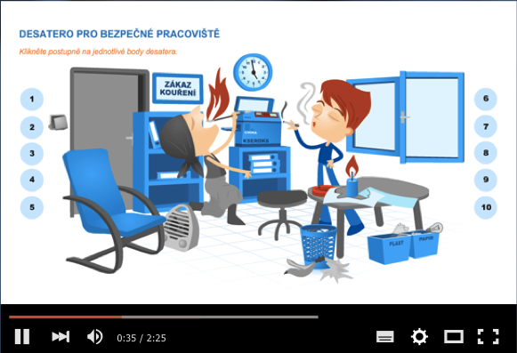

Školte zaměstnance
jednoduše, rychle
a podle legislativy
Nejpoužívanější online školení BOZP a PO v ČR od
poradenské společnosti PREVENT.

Krácení pojistného plnění při pracovním úrazu
Krácení pojistného plnění při dopravní nehodě
Krácení pojistného plnění při požáru
Pokutám státního požárního dozoru
Pokutám inspekce práce
Pokutám orgánů ochrany veřejného zdraví
Čím více zaměstnanců, tím větší úspory plynoucí z automatické organizace a individuální volby času a místa školení.
Pobočkové síti e-learning přináší kromě uvedených výhod rovněž úsporu času lokálních manažerů a standardizaci procesu školení.
E-learning najde uplatnění ve všech odvětvích. V návaznosti na základní kurzy umíme řešit i specifické podmínky a rizika.
Čím více zaměstnanců, tím větší úspory plynoucí z automatické organizace a individuální volby času a místa školení.
Pobočkové síti e-learning přináší kromě uvedených výhod rovněž úsporu času lokálních manažerů a standardizaci procesu školení.
E-learning najde uplatnění ve všech odvětvích. V návaznosti na základní kurzy umíme řešit i specifické podmínky a rizika.